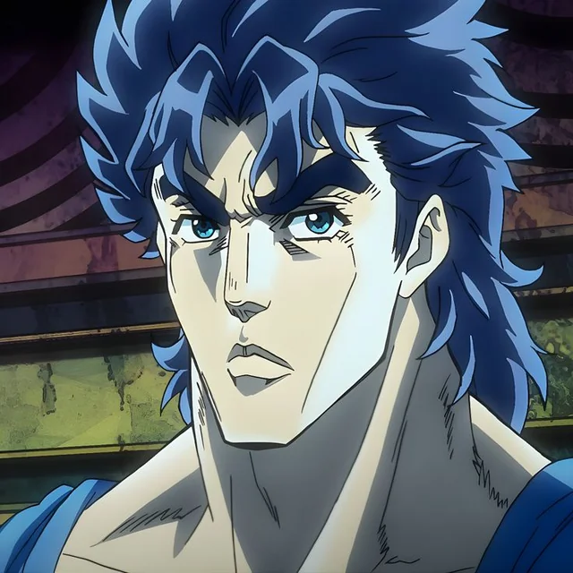
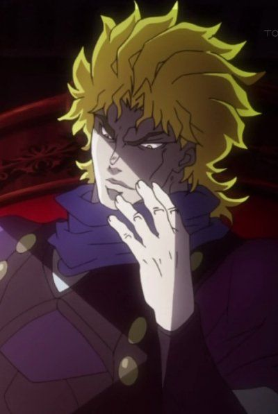
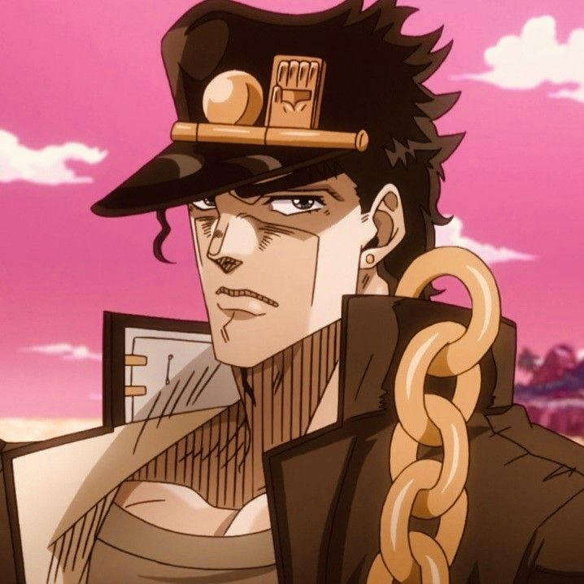
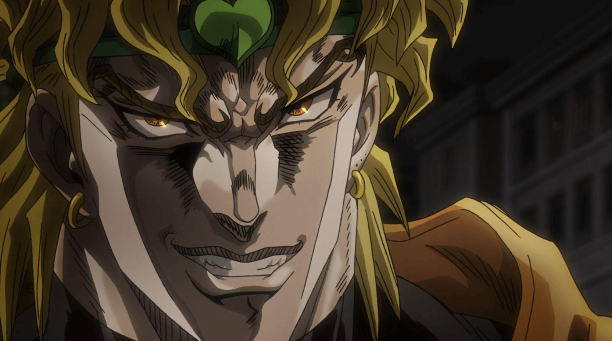
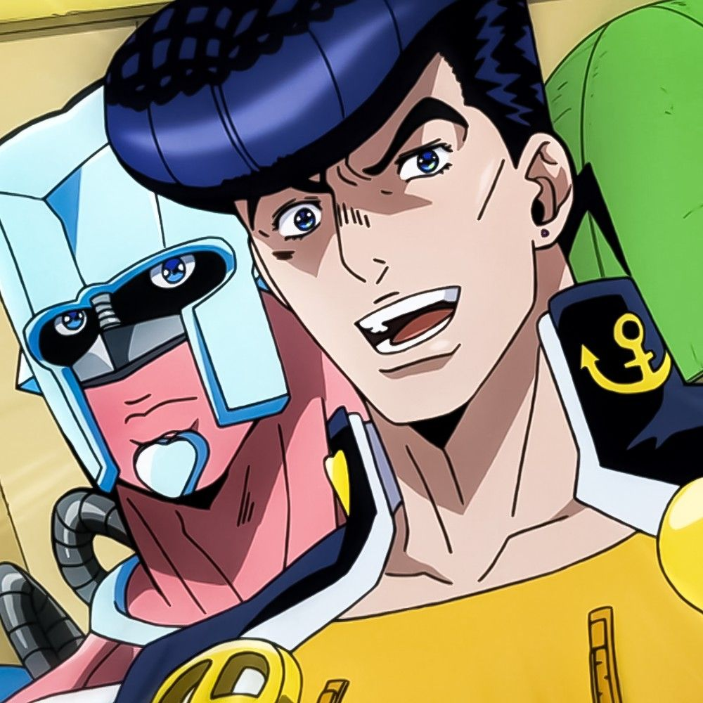
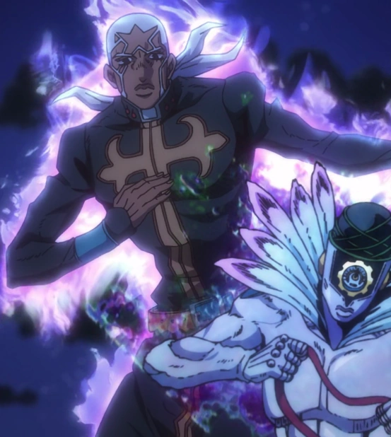
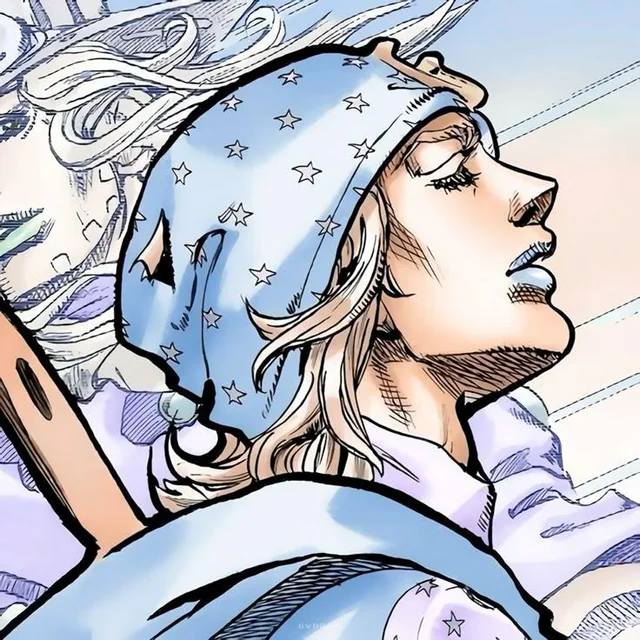
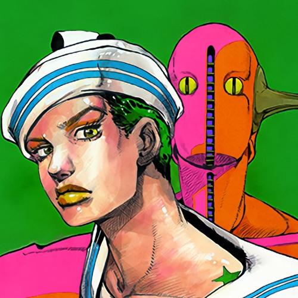
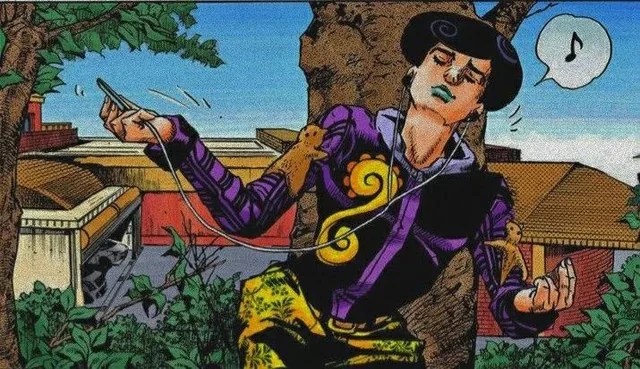

Parte 1 - Phantom Blood


Parte 2 - Battle Tendency


Parte 3 - Stardust Crusaders


Parte 4 - Diamond is Unbreakable


Parte 5 - Golden Wind


Parte 6 - Stone Ocean


Parte 7 - Steel Ball Run


Parte 8 - JoJolion


Parte 9 - The JOJOLands